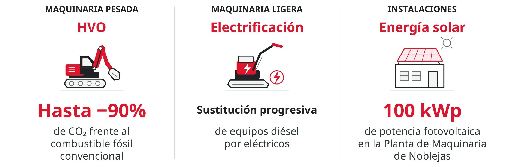

Las máquinas y equipos que están revolucionando el sector de la construcción
En una gran obra de infraestructuras, contar con maquinaria que incorpore las últimas innovaciones tecnológicas es clave para llevar a cabo proyectos cada vez más complejos, eficientes y sostenibles. En ACCIONA, esta visión estratégica forma parte de la transformación del negocio de construcción
Detrás de cada excavadora, grúa o equipo especializado que se utiliza en una obra de cierta envergadura actualmente existe una estrategia que combina tecnología, mantenimiento, innovación y gestión de activos para sacar el máximo partido a cada máquina. Para ACCIONA, además, resulta esencial que sus equipos sean más eficientes y estén preparados para afrontar los retos de una industria que avanza hacia una mayor digitalización y una reducción progresiva de su impacto ambiental.
Y es que la construcción del futuro no depende solo de tener mejores máquinas, sino de saber cómo emplearlas, conectarlas y gestionar cada activo para hacer las obras más eficientes, seguras y sostenibles.
“Ahora una máquina es una plataforma de datos”
Salvatore Campo, gerente responsable de Activos de Maquinaria de ACCIONA
Un aspecto fundamental es conseguir la máxima reducción de combustibles fósiles dentro de la maquinaria, ya que supone un impacto directo en la reducción de huella de carbono. Sin embargo, la principal dificultad que existe hoy en día a la hora de electrificar maquinaria pesada es energética: no requiere la misma demanda de energía un vehículo utilitario en una ciudad que una excavadora de gran tamaño en un lugar remoto.
Como explica Salvatore Campo, gerente responsable de Activos de Maquinaria del negocio de Construcción de ACCIONA, “se están buscando soluciones alternativas hibridadas para aquellos emplazamientos en los que el acceso a la energía sea difícil: sea con grupos electrógenos con baterías o a partir del despliegue de campos fotovoltaicos con baterías para poder alimentar una serie de equipos de menor o mayor tamaño que sean compatibles con ese volumen de energía. Al mismo tiempo, convivirán otras realidades actuales como motores con HVO o alguna solución de motor térmico de combustible”.
El HVO, una solución de transición
El HVO (Hydrotreated Vegetable Oil) es un biocombustible renovable generado a partir de aceite de residuos vegetales capaz de reducir las emisiones de CO₂ un 90% en comparación con los combustibles fósiles convencionales. Esta solución resulta especialmente idónea para la maquinaria pesada empleada en obra civil, donde la electrificación todavía presenta limitaciones técnicas.
En este sentido, Campo aclara que “para nosotros, el HVO tiene un papel transicional hasta que se consiga llegar a un nivel de electrificación mucho mayor. Lo utilizamos actualmente en aquellos equipos que por tipología no tienen un equivalente en eléctrico, o bien por circunstancias del propio proyecto, por emplazamiento o falta de acceso a una red de energía potente”.
Si bien en 2026 máquinas que tienen un mayor peso en motor térmico y pueden ser utilizados con HVO conviven con máquinas eléctricas y proyectos pilotos con pila de combustible, “con los años veremos que el HVO perderá peso en favor de tecnologías como la electrificación u otras realidades de cero emisiones”.
Otro aspecto muy positivo de las máquinas eléctricas es que su uso genera menos presión sonora tanto en su interior como en el exterior y, por tanto, se reduce la contaminación acústica en el entorno en el que se encuentran.
Así se descarboniza una obra

Máquinas que son más que herramientas
En una obra resulta cada vez más frecuente incorporar máquinas que consiguen reportar una infinidad de datos y de información que facilita la toma decisiones instantáneas.
De este modo, se puede actuar sobre cualquier circunstancia que haga que el equipo no trabaje dentro de los parámetros inicialmente preestablecidos, para volver a reconducir esa máquina o esa actividad en lo que estaba previsto. Y, por tanto, se consigue que la productividad se siga manteniendo, siempre con un componente sostenible que hace que la operatividad sea lo más eficiente posible.
“Ahora una máquina es una plataforma de datos que consigue colocar una gran cantidad de información importante y valiosa en la operación del equipo. Esto hace que la máquina en sí no solo sea una herramienta dentro de la obra, sino que los propios datos que genera su utilización puedan ser de valor en la toma de decisiones, tanto del momento actual como del futuro”, asegura Salvatore Campo.
Asimismo, el responsable de Activos de Maquinaria del negocio de Construcción de ACCIONA considera que “las máquinas actuales colocan a disposición del operador una cantidad de variables mucho mayor de lo que hacían hace unos años, con lo cual está cambiando tanto la forma de trabajar como la forma de interactuar entre un operador y una máquina”.
“En diez años me imagino el parque de maquinaria mucho más descarbonizado, conectado, automatizado y autónomo”
Salvatore Campo
El Parque de Maquinaria de Noblejas, un referente en descarbonización
En 2024, ACCIONA se convirtió en la primera empresa española en descarbonizar su principal centro de mantenimiento y reparación de maquinaria, ubicado en la localidad de Noblejas (Toledo), empleando biocombustible renovable para su maquinaria pesada e incorporando equipos eléctricos para la más ligera.
Además, este centro estratégico destinado al cuidado de los activos de maquinaria de ACCIONA se abastece de electricidad mediante una instalación fotovoltaica de 100kWp en la pérgola del estacionamiento, gracias a la cual el porcentaje de cobertura de su demanda energética se acerca al 35%. Todo ello lo convierte en referencia internacional en la descarbonización de la construcción.
En este espacio se mantienen, se reparan y se adecúan maquinarias de distinta índole, según los requerimientos técnicos de cada uno de los proyectos a los cuales están destinados: desde grúas-torre, grupos de electrógeno y compresores, pasando por equipos de movimiento de tierras, plantas de fabricación de hormigón de asfalto, equipos de perforación o tuneladoras de entre tres y quince metros de diámetro.
Según Campo, “por tipología, superficie y capacidad industrial, el Parque de Maquinaria de Noblejas consigue albergar soluciones que estamos validando y testando antes de llegar a una obra, porque se da el mismo entorno que dentro de una obra civil. De esta manera, logramos validar con antelación cuál será el desempeño de ese equipo dentro de una futura obra o dentro de una aplicación específica en uno de los proyectos”.
Claves para minimizar emisiones desde el diseño de una obra

La sostenibilidad, una ventaja también económica
Cuando una máquina es más eficiente de manera energética, consume menos, redunda en un mantenimiento menor e incluye costes de operación también menores. “Para ACCIONA, la sostenibilidad no supone un sobrecoste”, constata Salvatore Campo, argumentando que “si analizamos no solo el momento de adquisición de la máquina, sino el ciclo completo de vida útil del activo, vemos que incorporar la sostenibilidad es una ventaja también a nivel económico”.
Otra ventaja de basar la estrategia en criterios de sostenibilidad es que estos forman cada vez más parte de los elementos necesarios para las licitaciones tanto públicas como privadas. De este modo, “apostar por la sostenibilidad no solamente tiene un rédito económico en cuanto a utilización del equipo, sino que nos posiciona para tener capacidad de abrir negocios en nuevos países y destinos”.
En cuanto a su visión de futuro, Campo afirma que “en diez años me imagino el parque de maquinaria mucho más descarbonizado, conectado, automatizado y autónomo, en el que la presencia de un operador no implique estar siempre dentro de la cabina y sea más como un director de orquesta con diferentes máquinas funcionando en un mismo entorno. Y la descarbonización será una realidad, con la aplicación de nuevas fuentes de energía que mejoren la operatividad de acción en cualquier tipo de proyecto”.